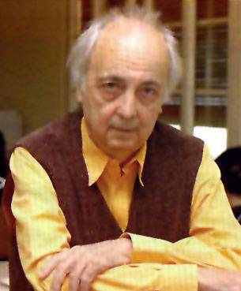

En
què consisteix la feina de l'arquitecte?
Sobretot a donar claredat a situacions confuses, com ara les
que produeix el creixement de les ciutats. L'arquitecte ja
de fer les coses comprensibles i evidents als usuaris.
Amb
quins criteris treballa?
M'interessa l'experiència de l'espai urbà com
un espai recorregut pels ciutadans. I això té
lloc al pla de terra, a la planta baixa. A la ciutat caminem,
entrem i sortim, circulem... Per això és important
com es connecta una plaça amb un carrer, una escola
amb uns habitatges... Aquestes relacions són el punt
principal que ha de resoldre un projecte urbà. La planta
baixa i el que passa allí és el que dóna
qualitat a una ciutat.
Com veu, urbanísticament, el districte de Sant Andreu?
En aquests anys, el principal canvi que s'està produint
és l'augment de la centralitat. Sant Andreu està
passant a ser una peça important dels sistema metropolità,
tant per les noves infraestructures que hi poden venir com
pel creixement de la ciutat. Sant Andreu es troba ja en una
posició molt centrada respecte al Vallès i les
zones més properes.
Quins són els efectes d'aquest augment de centralitat?
Doncs
que comencen a aparèixer una sèrie d'elements
que ja no són solament locals, sinó que tenen
una significació d'abast més ampli. A la seva
condició de 'barri', d'activitat pròpiament
residencial, Sant Andreu hi ha d'afegir també les funcions
i relacions d'un 'barri' cèntric.
A Sant Andreu hi ha en marxa alguns dels grans projectes
urbanístics de la Barcelona actual. Un n'és
la urbanització de la part de les casernes, que vostè
planejarà. Com li agradaria que fos el resultat?
Primer que lligui molt bé amb tot el conjunt de Sant
Andreu. Segon, que afegeixi una personalitat pròpia
als elements urbans que ja integren el 'barri'. I tercer,
que respongui a la idea que aquesta és una part important
de la gran metròpoli.
|
|
|  |
Manuel
de Solà-Morales
arquitecte-urbanista
encarregat per
l'ajuntament de Barcelona i
el Consorci de la Zona Franca
per a la potinada als
terrenys públics
de les casernes |
És
un espai molt significatiu: un total d'onze hectàrees.
Tenim un programa amb una gran riquesa d'elements, amb molts
equipaments, alguns amb una grandària prou substancial
per ser equipaments de ciutat; amb habitatge, comerç,
escoles, poliesportius, centres sanitaris... Serà un
espai de gran complexitat urbana, que crearà una extensió
de la vida ciutadana de Sant Andreu.
Una altra intervenció urbanística rellevant
és la que es farà al triangle ferroviari, on hi
haurà l'edifici de Frank Gehry que allotjarà el
Museu del Transport. Què n'opina, d'aquest projecte?
No el conec gaire, només pels diaris... És un
projecte una mica excepcional, que potser no hauria d'esdevenir
l'emblema del districte. Pot tenir interès des del punt
de vista arquitectònic o de solució d'uns espais
especialment confusos. Però el futur de Sant Andreu ha
de passar per altres elements que afectin més els espais
utilitzats pels ciutadans a la vida diària.
Què li sembla la "planta baixa" de Barcelona?
En general, bé. I aquesta és una de les raons
per les quals Barcelona és apreciada internacionalment.
Els espais públics tenen una qualitat mitjana-alta si
els comparem amb els d'altres ciutats. Però aquesta qualitat
encara s'ha de millorar. I si pensem en Sant Andreu, doncs exactament
el mateix.
Si no fos arquitecte, a què s'hauria dedicat?
M'agrada la música. Vaig estudiar direcció d'orquestra.
Però m'he dedicat a l'urbanisme, que és una mica
el mateix: combinar sons diferents perquè facin una bona
sintonia.
|